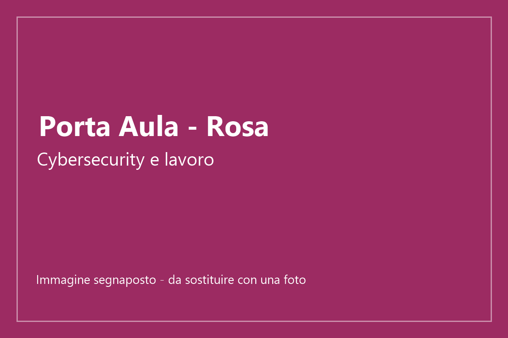

La trasformazione digitale, l'intelligenza artificiale e la sicurezza informatica interessano ormai aziende di ogni settore.
Il macro-settore della cybersecurity riguarda la protezione di dati, sistemi, reti e identità digitali.
Con la crescita di cloud, intelligenza artificiale, IoT (Internet of Things, gli oggetti connessi) e servizi online, le imprese hanno bisogno di professionisti capaci di prevenire attacchi, gestire i rischi e rispondere agli incidenti.
Gli ITS Academy (istituti tecnici superiori) nascono proprio per rispondere ai bisogni del territorio, formando figure tecniche specializzate insieme alle aziende.

Ultimo aggiornamento: 13/11/2026